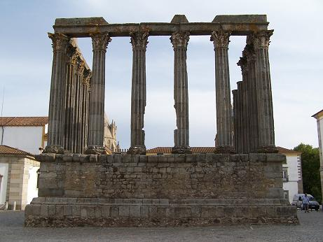
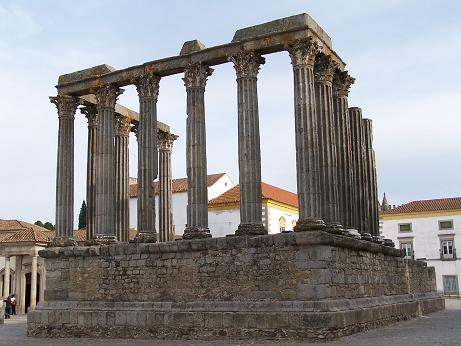
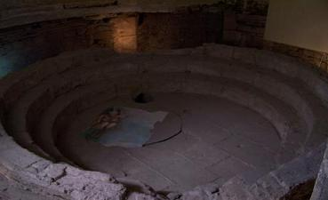
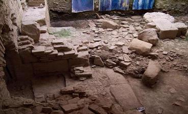

|
 |
 |
El conjunto arqueológico de la villa de Tourega datado en el siglo I, del
complejo destacan las termas de la villa en uso hasta el siglo IV,
ocupando una superficie de 500m2. Las termas tenían una parte para mujeres
y otra para hombres. También han aparecido multitud de restos cerámicos,
monedas, objetos metálicos, mármoles... Las termas se hallan en la plaza del Concelho.
Las excavaciones hacen suponer que eran las Termas Públicas de la ciudad
romana. Se Se ha escavado un área de unos 250m2. El "Laconicum"
se halla en un estado de conservación muy bueno.
|
 |
 |
|